写真を撮って、数を確認して、記録する。 うさころは、うさぎのうんちを写真で記録し、カレンダーやグラフで振り返るアプリです。毎日続けなければ、と思わず、できるときに記録してみてください。
まずは1回、記録してみましょう
- 「ホーム」で カメラで記録する をタップします。今日すでに記録がある場合は 追加で記録する と表示されます。
- うんちを撮影します。続けて撮影した場合は、撮影画面の おわり から写真を確認します。
- 「解析結果」で、写真と推定された個数を確認します。
- 必要に応じて個数・記録日時を直し、メモを入力します。
- 記録する をタップします。
これで1件の記録ができました。「カレンダー」や「記録」で保存した内容を確認できます。
動画で見る：カメラで撮影して記録する
動画は再生ボタンを押すと始まります。一時停止や全画面表示で、操作を確認できます。

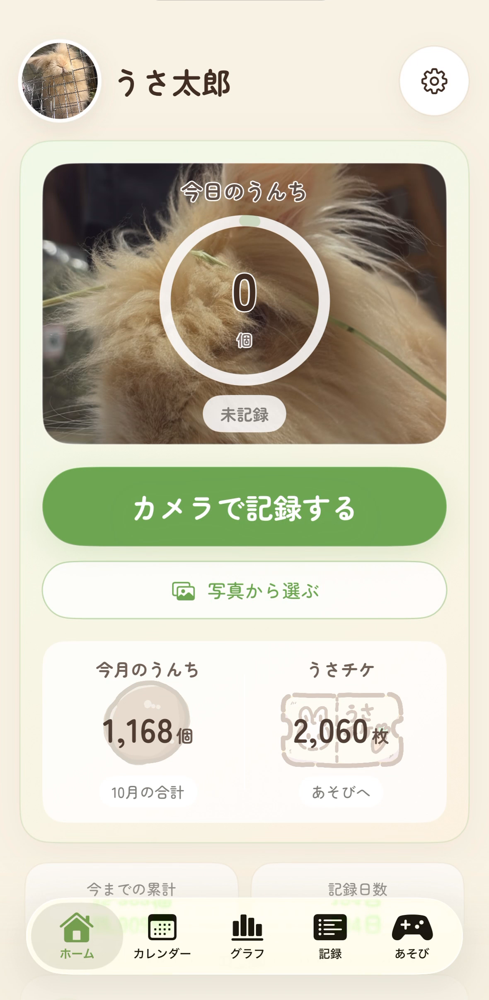
画面内の名前、写真、個数は使用例です。掲載画面はiPhoneの例で、表示位置は端末によって異なる場合があります。
写真を記録する
すでに撮った写真を使う
- 「ホーム」の 写真から選ぶ をタップします。
- 写真を選びます。
- 解析結果の個数・記録日時を確認し、記録する をタップします。
写真から撮影日時を読み取れる場合は、その日時が記録に使われます。読み取れない場合は現在の日時になります。過去の写真を使うときは、保存前に日付を確認してください。
動画で見る：写真ライブラリから選んで記録する
動画で見る：過去の日付で記録する
個数を確認する
表示される個数は写真からの推定値です。写真と見比べて、違っていたら保存前に修正できます。撮り直したい場合は 撮り直す をタップします。

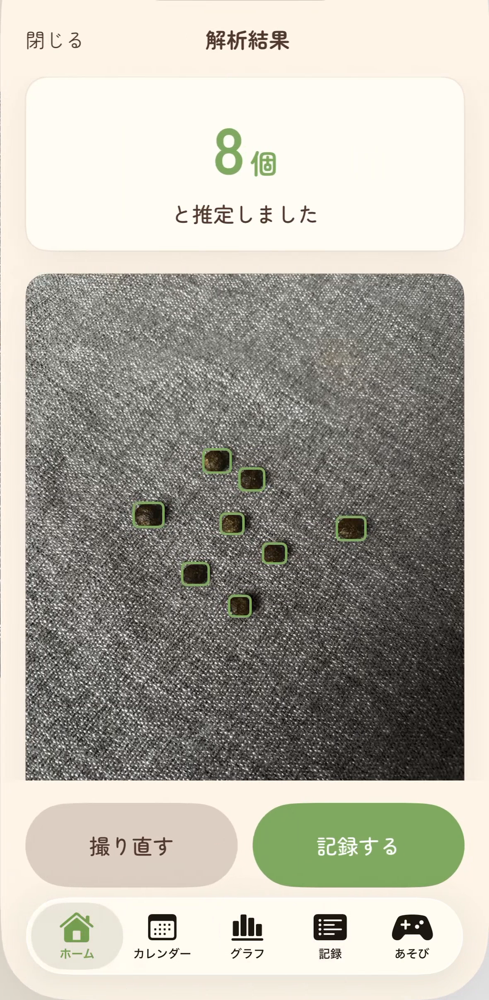
写真を撮るときのコツ
うんち全体が写るようにし、ピントを合わせて撮ってみてください。明るい場所で、うんちが重なりすぎない状態にすると確認しやすくなります。
メモを付ける
メモは任意です。「朝の掃除のとき」「いつもより牧草の減りが遅い」など、あとで思い出したいことを書いておけます。

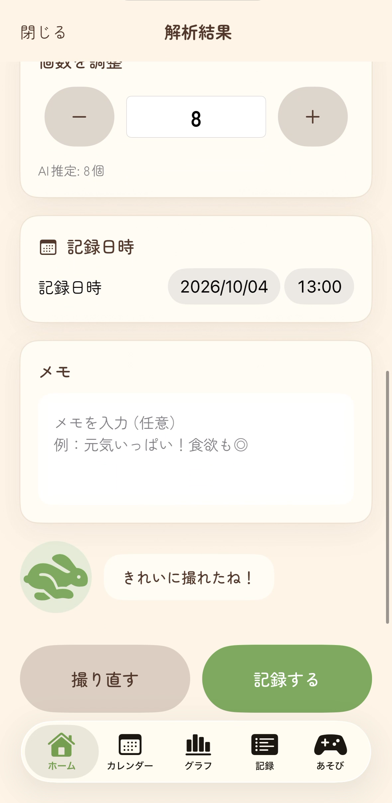
動画で見る：メモを入力して記録する
記録を振り返る
画面下のタブから、見たい画面へ移動します。
| タブ | できること |
|---|---|
| ホーム | 今日や今月の記録、最近の記録を確認する |
| カレンダー | 日付を選んで、その日の記録を見る |
| グラフ | うんち個数の推移を見る |
| 記録 | 過去の記録を探す、詳細を開く、うさレポを作る |
| あそび | うさチケを使って、うさみくじ・うさころキャッチで遊ぶ |
カレンダー
「カレンダー」で日付をタップすると、その日の記録を確認できます。過去の日付で保存した写真を探すときにも使えます。

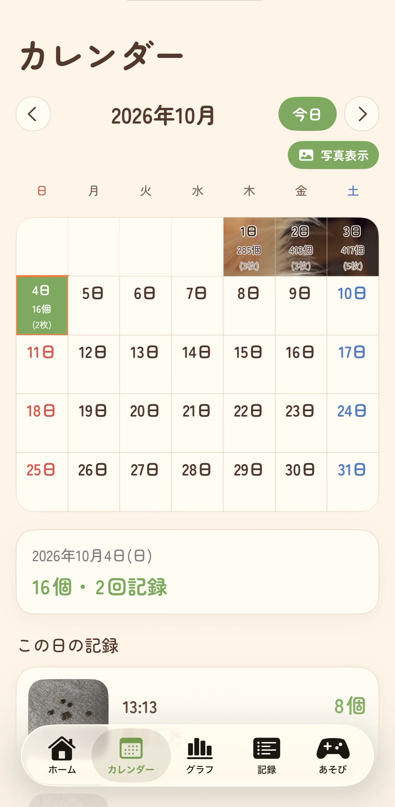
動画で見る：カレンダーから記録を確認する
グラフ
「グラフ」で表示期間を切り替え、個数の変化を見ます。同じ日に保存した複数の記録は、日別の合計に含まれます。

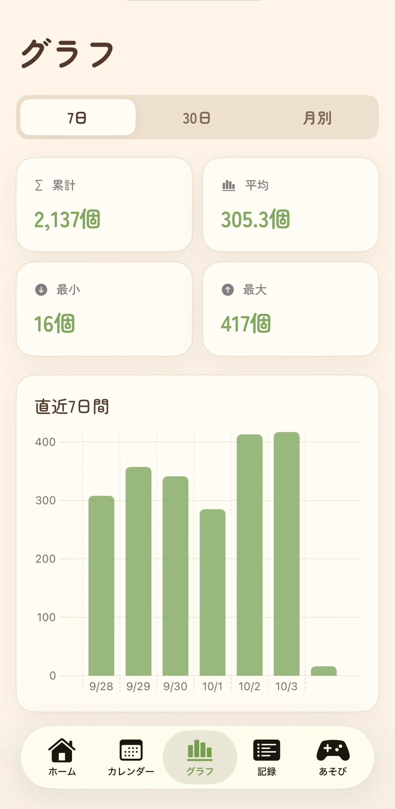
動画で見る：グラフの表示期間を切り替える
記録を探す
「記録」では一覧から写真や日時を確認できます。メモの言葉で検索し、表示順を切り替えて探すこともできます。見たい記録をタップして詳細を開きます。
保存した記録を直す・削除する
個数を直す
記録詳細で個数を入力するか、＋／− を使って変更し、個数欄の 保存 をタップします。個数は「保存」を押してから反映されます。

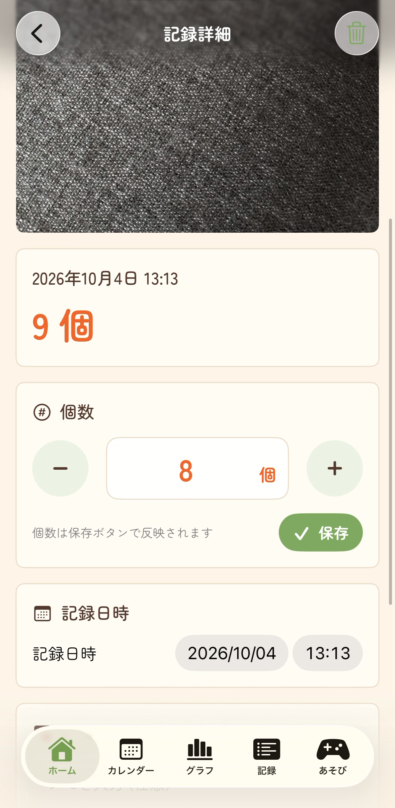
日時・メモを直す
記録詳細の「記録日時」を変更すると保存されます。メモは入力を終えて入力欄から離れたときや、詳細画面を閉じたときに保存されます。
動画で見る：保存した記録を編集する
記録を削除する
記録一覧で対象の行をスワイプするか、記録詳細の削除操作から削除できます。削除すると、その記録と保存した画像が消えます。残しておきたい記録は、削除前にバックアップを作ってください。

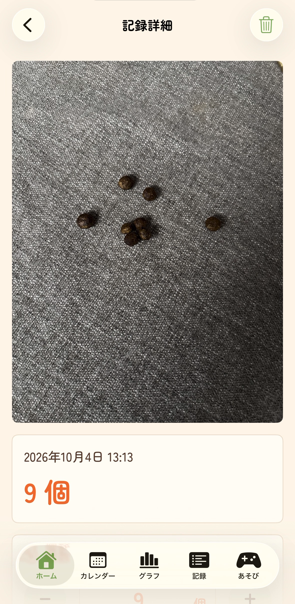
うさレポを作る
うさレポは、記録や写真をまとめたPDFです。相談したい内容を整理し、獣医師に見せたい情報をまとめるときに使えます。
- 「記録」タブの うさレポ をタップします。
- 相談内容や気になっていることを入力します。
- 「かんたんチェック」で、各項目の状態を選びます。必要に応じて項目を追加・削除できます。
- 「うんちの変化」で、載せたい期間を選びます。
- 見せたい記録や写真を選び、必要なら写真の説明を入力します。
- 画面下の PDFを確認 をタップします。
- 内容を確認し、直したい場合は 戻って修正、渡したい場合は 共有 をタップします。

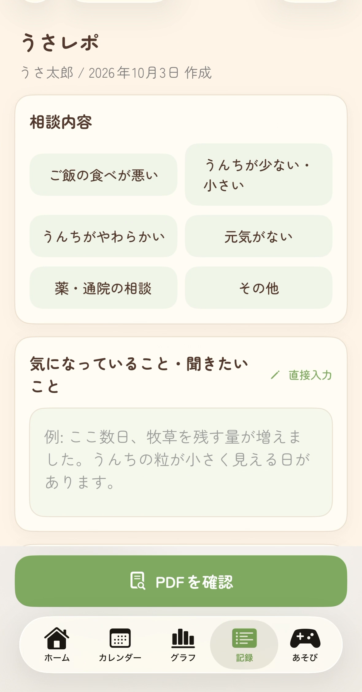

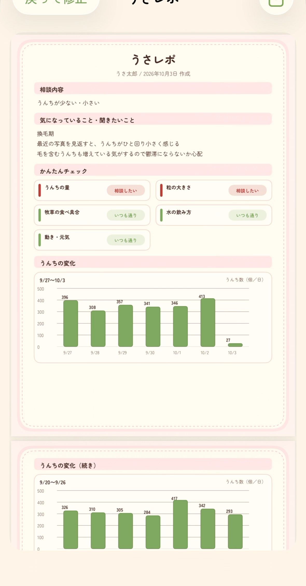
動画で見る：うさレポを作成してPDFを確認する
うさレポは飼育記録を整理するものです。診断を行うものではなく、獣医師による診断に代わるものではありません。
名前・写真を変える
「ホーム」右上の歯車をタップすると、「プロフィール」が開きます。
- うさぎの名前：名前を入力して「保存」をタップします。
- プロフィール画像：画像をタップし、撮影または写真ライブラリから選びます。
- 今日の記録カード背景：背景に使いたい写真を選びます。

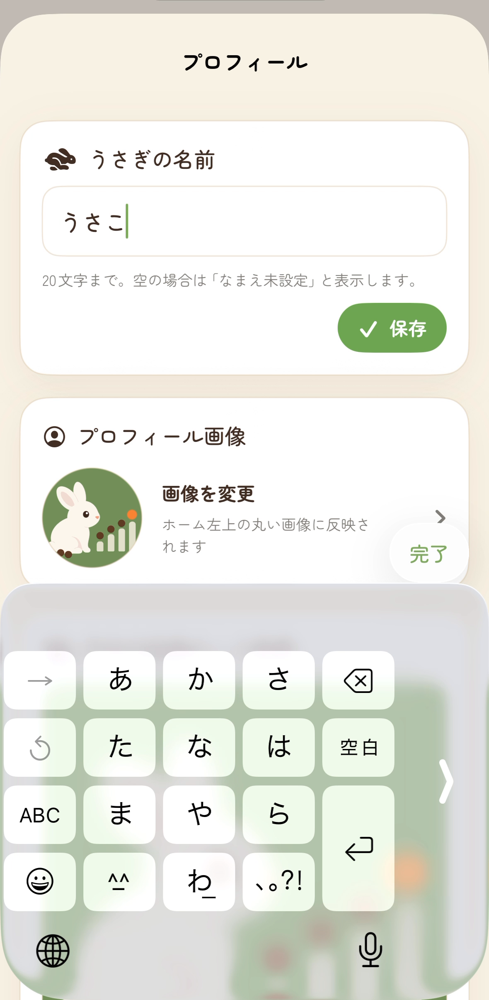

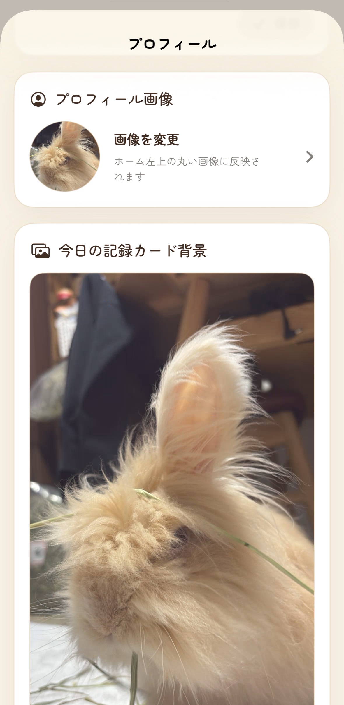
動画で見る：プロフィールを変更する
うさチケで遊ぶ
「あそび」には うさみくじ と うさころキャッチ があります。
- うさみくじ：うさチケ1枚を使って1回引けます。
- うさころキャッチ：10玉・30玉・50玉から選びます。使ううさチケは、それぞれ1枚・3枚・5枚です。開始後は盤面をタップして発射します。
うさチケは、記録したうんち数からの交換や、画面に表示されるボーナスで増やせます。「今日のボーナス」を開くと、その日の項目を確認できます。

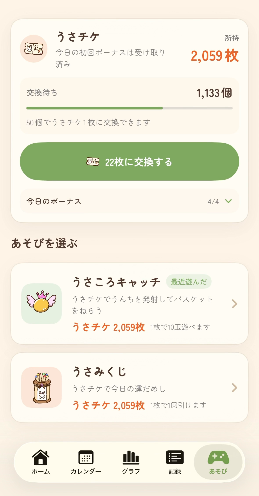
動画で見る：うさみくじを引く
動画で見る：うさころキャッチで遊ぶ
遊びのスコアは、うんちの記録個数や健康状態を表すものではありません。
バックアップと機種変更
記録は端末内に保存されます。うさころには、端末間で記録を自動同期する機能はありません。別の端末へ移すときは、バックアップファイルを使います。
バックアップを保存する
- 「ホーム」右上の歯車から「プロフィール」を開きます。
- 「バックアップ」の バックアップを書き出す をタップします。
- 保存先を選び、バックアップファイルを保存します。
記録と写真、うさレポの下書き、プロフィール画像・背景、うさチケなどのあそびの進捗が1つのファイルにまとまります。機種変更やアプリの削除前には、バックアップを保存しておきましょう。
別の端末で復元する
- 保存したバックアップファイルを、「ファイル」やAirDropなどで新しい端末へ渡します。
- 新しい端末のうさころで「プロフィール」を開きます。
- バックアップから復元 をタップし、ファイルを選びます。
- 確認内容を読み、復元する をタップします。
復元すると、新しい端末にある現在の記録・画像・プロフィール・あそびの進捗は、バックアップの内容に置き換わります。追加や合算ではありません。 必要なら、復元前にその端末のバックアップも保存してください。
困ったとき
保存したのに、ホームの「今日のうんち」が増えません
記録日時を確認してください。過去の写真は撮影日で保存される場合があるため、今日の合計には入りません。「カレンダー」でその日付を開くか、「記録」から探してみてください。
推定された個数が違います
写真と見比べ、個数を修正してから記録してください。保存後でも記録詳細から直せます。
カメラが使えません
カメラの利用許可を確認してください。iPhone・iPadの「設定」で、うさころのカメラ許可を変更できます。撮影済みの写真がある場合は、ホームの「写真から選ぶ」も使えます。
体調が心配です
カウントやグラフは記録の目安です。体調に不安がある場合は獣医師に相談してください。うさレポで記録をまとめて見せることもできます。
作成日：2026年10月4日